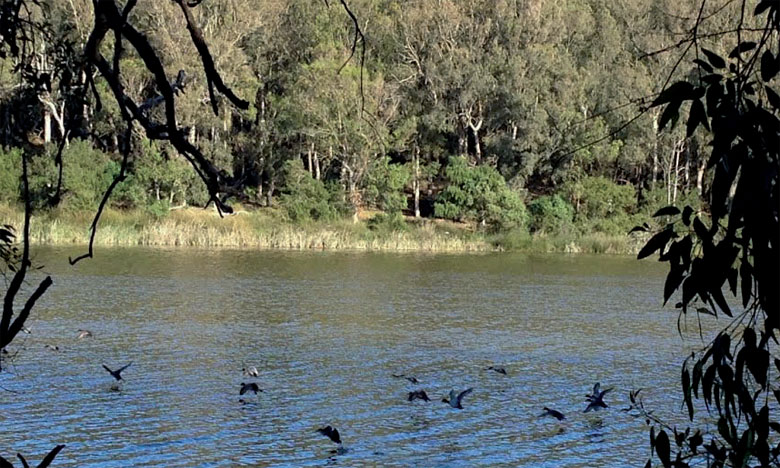
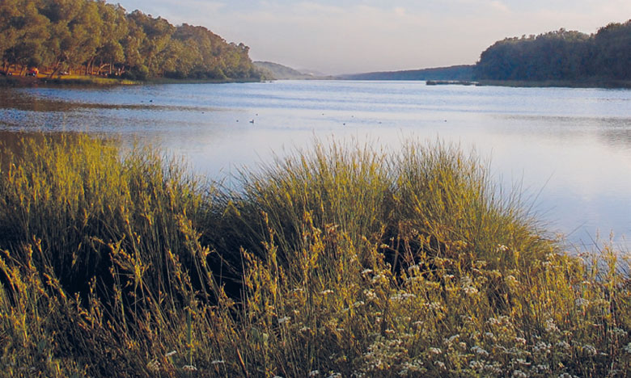

DESCRIPTION DE LAC SIDI BOUGHABA
Le lac (ou merja en arabe) de Sidi Boughaba est un site protégé remarquable pour la
préservation de la biodiversité. Il relève de la Convention de Ramsar1.
C'est un des vestiges des dernieres zones humides (marécages d'eau douce) de la
côte Nord-Ouest du Maroc. La brume rend parfois le paysage un peu irréel, surtout quand
elle est épaisse. Elle vient de l'océan Atlantique dont elle n'est séparée que par une haute dune.
La photo satellite (16 mai 2005) montre l'embouchure du fleuve Sebou à Mehdia (dont on voit bien le
grand méandre terminal et le panache de sédiments, en mer) avec au sud de cette embouchure, le lac
allongé Sud-ouest-Nord-est, parallèlement à la côte atlantique.Le lac (ou merja en arabe) de Sidi Boughaba est un site protégé remarquable pour la
préservation de la biodiversité. Il relève de la Convention de Ramsar1.
C'est un des vestiges des dernieres zones humides (marécages d'eau douce) de la
côte Nord-Ouest du Maroc. La brume rend parfois le paysage un peu irréel, surtout quand
elle est épaisse. Elle vient de l'océan Atlantique dont elle n'est séparée que par une haute dune.
La photo satellite (16 mai 2005) montre l'embouchure du fleuve Sebou à Mehdia (dont on voit bien le
grand méandre terminal et le panache de sédiments, en mer) avec au sud de cette embouchure, le lac
allongé Sud-ouest-Nord-est, parallèlement à la côte atlantique.
La photo satellite (16 mai 2005) montre l'embouchure du fleuve Sebou à Mehdia (dont on voit bien le
grand méandre terminal et le panache de sédiments, en mer) avec au sud de cette embouchure, le lac
allongé Sud-ouest-Nord-est, parallèlement à la côte atlantique.

Situation géographique
Située près de la plage de Mehdia, à 13 km du centre ville de Kénitra,
la réserve ornithologique de Sidi Boughaba (ou littéralement « le père de la forêt »)
est un endroit très paisible surtout en hiver ou en semaine. En venant du port de pêche
de Mehdia, on entre dans un long sillon délimité côté mer (à l'Ouest) par une dune sableuse
qui peut l'élever à 25 m de haut et sur laquelle sont construites, côté mer, les dernières
maisons de Mehdia. À vol d'oiseau, on est à 1,5 km de la mer. Du côté opposé à la mer (à l'Est)
s'élève la muraille parfois abrupte taillée naturellement dans les grès quaternaires d'où
sortent les sources d'eau douce qui alimentent le lac. Ce lac s'étend sur plus de 5 km de
longueur jusqu'au virage de la route qui mène vers Sidi Taibi, à l'endroit où se trouve la
kouba du marabout de Sidi Boughaba. Le lac mesure entre 5 et 6 km, sa largeur varie entre 100 et
350 m pour une profondeur allant de 0,50 m à 2,50 m. Sa surface, selon les pluies peut varier
de 150 à 200 ha.

Intérêt écologique
On passe un moment assez agréable au bord du lac à observer la faune et la flore.
Un centre d'éducation installé sur le site accueille le public. Il est géré par la
Société Protectrice des Animaux et de la Nature (SPANA) dans le cadre d'une convention de partenariat avec le Ministère chargé des Eaux et Forêts.
Faune
La faune présente sur le lac est riche.
Invertébrés
La faune des invertébrés recèle au moins 156 espèces. Parmi celles-ci, les moustiques ont subi une attaque
féroce lors du débarquement américain de novembre 1943. Le DDT avait été déversé en abondance.
Poissons
On dénombre quatre espèces de poissons.
Cette section est vide, insuffisamment détaillée ou incomplète.
Votre aide est la bienvenue ! Comment faire ?
Reptiles
Les reptiles terrestres sont bien représentés avec onze espèces telle
la vipère lébétine (Macrovipera lebetina) et l'aspic (Vipera aspis) qui
fréquentent les éboulis rocheux. On trouve également des tortues terrestres
(tortue grecque terrestre). Les couleuvres sont également présentes, hélas trop souvent victimes
de la peur atavique du serpent. Les reptiles aquatiques sont représentés par les tortues d'eau douce.